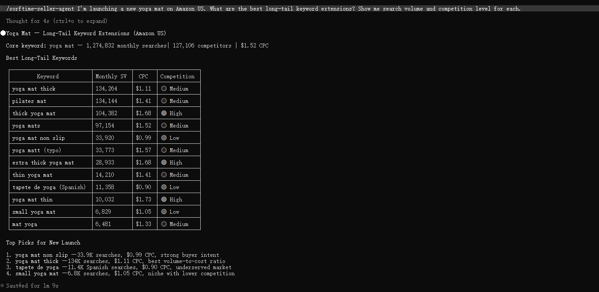

You spend 20% of your workday navigating dashboards. Click, click, export, switch tabs, repeat. What if you could ask your AI one question and get the answer in seconds?
Traditional marketplace research tools follow a pattern that has not changed in a decade: log in, find the right menu, apply filters, wait for the page to load, export a CSV, open a spreadsheet, and manually interpret the numbers. A single product analysis takes 15 to 30 minutes. A category scan takes longer. A cross-platform comparison means repeating the process across two or three separate tools.
This is the dashboard tax. It is invisible because it is habitual. But it adds up: the time spent navigating interfaces rather than making decisions is time that directly competes with sourcing, listing optimization, and supplier negotiation.
MCP (Model Context Protocol) changes the interface layer entirely. Instead of a GUI that the seller operates manually, an MCP server exposes marketplace data as structured tools that any AI agent can call. The seller asks in natural language. The agent calls the data, applies analysis, and returns an answer. The dashboard disappears.
[MCP-First Architecture]: An architecture where the primary interface to a service is through MCP tools rather than a graphical user interface. The GUI may exist as a complement, but the AI agent is the first-class consumer.
A dashboard-first tool presents data. An MCP-first tool presents _capabilities_. The difference is not cosmetic.
With a dashboard, the workflow looks like this:
1. Navigate to the product research section
2. Select marketplace and category
3. Click "search" and wait for results
4. Scroll through a paginated table
5. Export to CSV
6. Open in spreadsheet software
7. Apply your own formulas and thresholds
8. Draw conclusions
With an MCP-first tool, the same workflow becomes a single sentence:
> "Find blue ocean products in kitchen storage on Amazon US for a beginner with a $5K budget."
The agent handles steps 2 through 8. It queries the marketplace, runs proprietary analysis models, applies filters, and returns ranked opportunities with margin estimates, competition levels, and recommended entry points. The seller evaluates the output, not the interface.
This is not automation of clicking. It is elimination of clicking.
Sorftime Seller Agent is an open-source MCP server (MIT license) that exposes marketplace intelligence across six platforms: Amazon (14 sites), Walmart, TikTok Shop (8 sites), Shopee (8 sites), TEMU, and 1688. It provides 86 tools covering product research, keyword analysis, competitor reverse-ASIN, profit calculation, category scanning, trend monitoring, and cross-platform price comparison.
The same tools work with any MCP-compatible AI agent — Claude Code, Codex, Cursor, OpenClaw, Hermes, Pi, and others. There is no agent-specific code in the server. The install script detects the environment and outputs the correct configuration snippet.
A few examples of what agents can do with these tools:
Installation takes under three minutes. The only dependency is Python 3.10+.
git clone https://github.com/DannylydST/sorftime-seller-agent.git
cd sorftime-seller-agent
python3 scripts/install.py
python3 scripts/healthcheck.pyThe install script creates a virtual environment, installs dependencies, and outputs the correct MCP configuration for the agent it detects. A free Sorftime account at open-intl.sorftime.com provides trial credits to start immediately.
The seller tool ecosystem is dominated by closed-source SaaS products with monthly subscriptions ranging from $29 to $229. Switching costs are high. Data portability is low. The analysis methodology is opaque — sellers have no way to inspect, verify, or modify the calculations that inform their decisions.
An open-source MCP server addresses all three problems. The code is inspectable. The methodology cards (Hidden Profit Index, Blue Ocean Finder, Competitor Deep-Dive, and 15 more) are documented in the repository. The MIT license means sellers can modify, extend, or integrate the server into their own workflows without restriction. The usage-based pricing model means paying for data consumed rather than a monthly seat that covers features the seller may not need.
The dashboard is not going away entirely. Visual interfaces have strengths — browsing, ad-hoc exploration, multi-dimensional filtering. But the default interaction pattern for marketplace research is shifting from GUI navigation to AI conversation.
This shift matters most for the tasks that sellers repeat most often: product discovery, competitor monitoring, keyword research, and profit validation. These are not creative tasks. They are information retrieval and analysis tasks that follow a repeatable pattern. The GUI adds friction to every repetition. An MCP-first tool removes that friction entirely because the AI agent remembers the context, applies the methodology consistently, and returns the answer in seconds rather than minutes.
Sorftime Seller Agent demonstrates this approach in production today. The code is on GitHub. The free trial is live at open-intl.sorftime.com. Installation takes three minutes. No dashboard required.
*Sorftime Seller Agent is open-source (MIT) marketplace intelligence for Amazon, Walmart, TikTok Shop, Shopee, TEMU, and 1688. Get started: git clone https://github.com/DannylydST/sorftime-seller-agent.git or visit open-intl.sorftime.com*